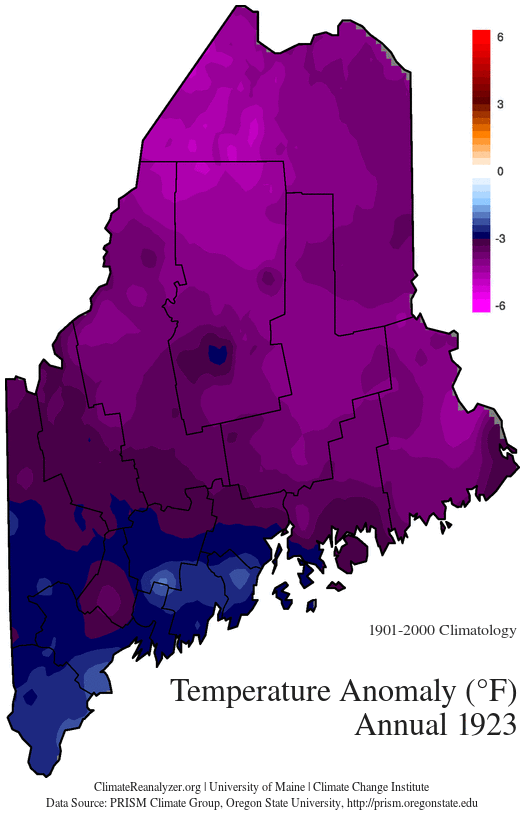

Maine State Climate Office
Home
Climate
Monthly Data
Daily Data
Weather
Today's Global Weather
U.S. Regional Forecast Maps
U.S. Seasonal Outlook Maps
U.S. Northeast WxAg
Newsdesk
Climate Summaries
Researchers
Resources
Monthly Climate Data

Select Variable & Time Interval
Avg Temperature Anomaly
Avg Temperature
Max Temperature
Min Temperature
Precipitation Anomaly
Precipitation
January
February
March
April
May
June
July
August
September
October
November
December
Annual (Jan-Dec)
Winter (DJF)
Spring (MAM)
Summer (JJA)
Fall (SON)
Download Spreadsheet (CSV)